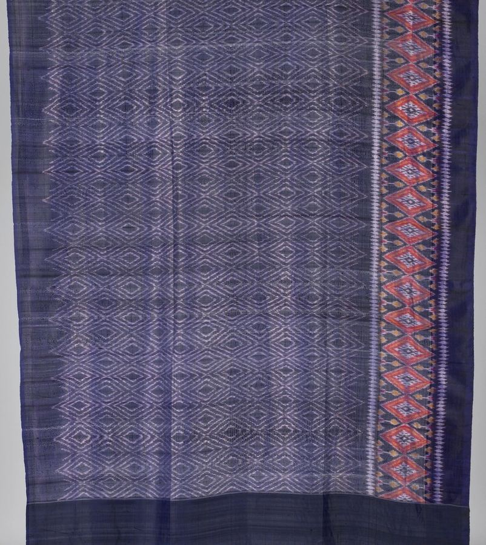
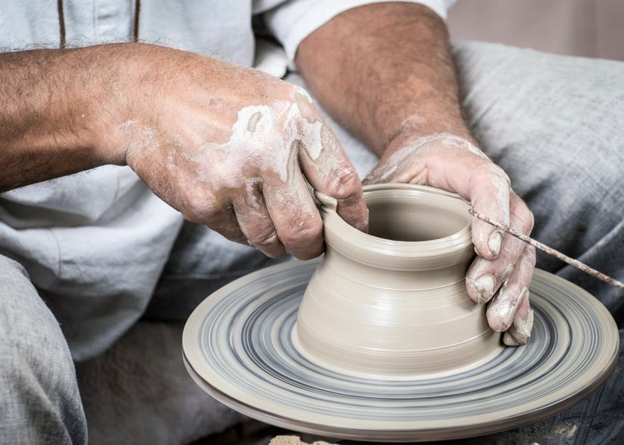
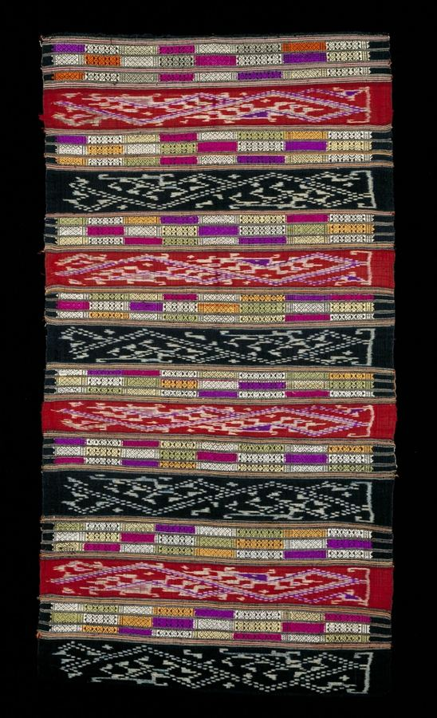
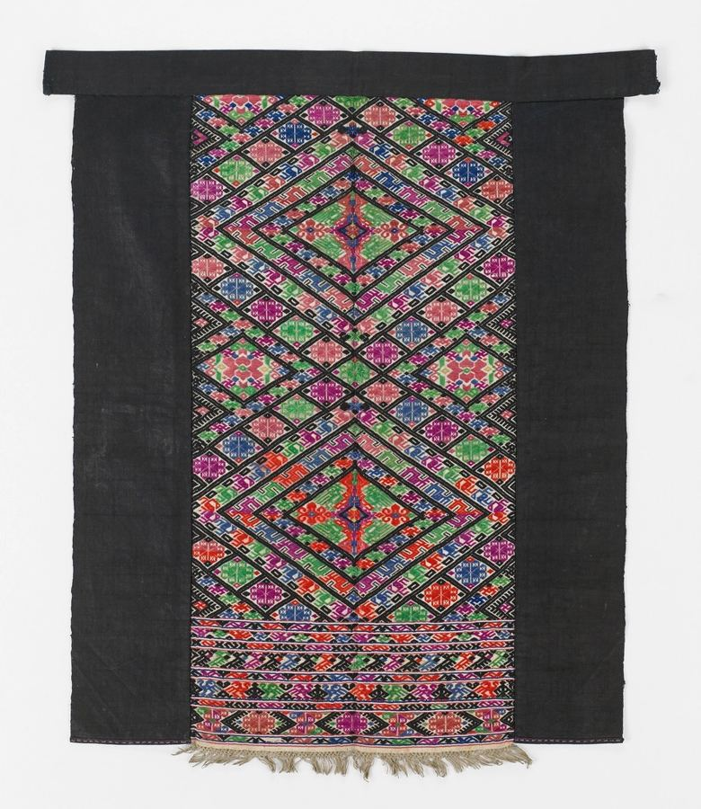
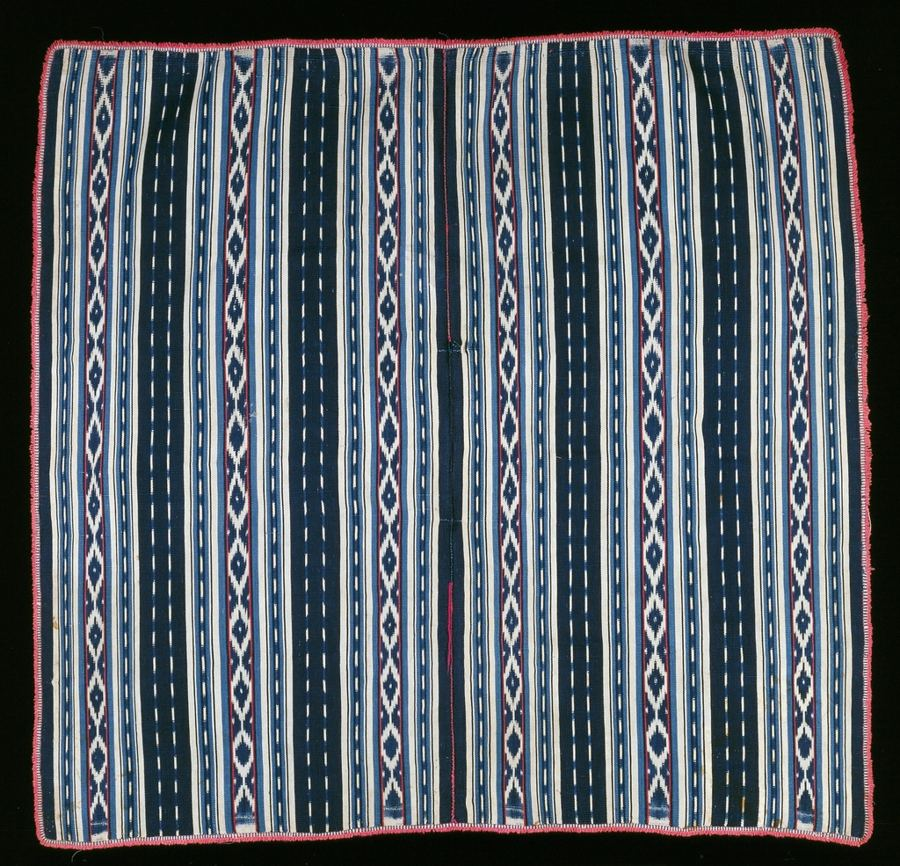
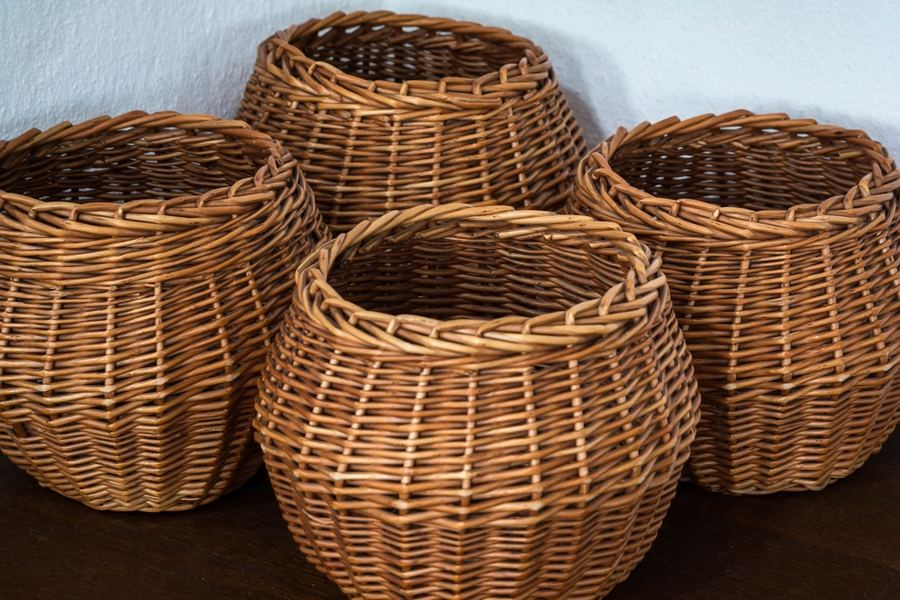
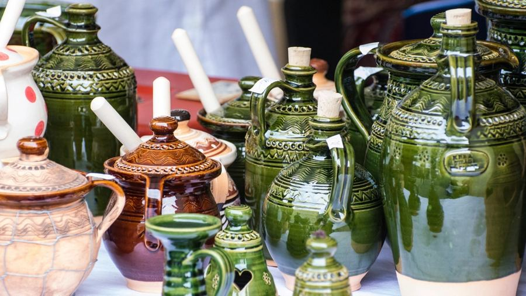

ผ้าฝ้ายย้อมครามIndigo-dyed cotton
ผืนยาว ใช้เป็นผ้าคลุมไหล่ได้Long piece, works as a shawl
450.-
ผ้าทอ งานจักสาน ของฝาก · อุดรธานี · Isan crafts & gifts · Udon Thani
Handmade crafts and gifts from Isan
ผ้าย้อมคราม ผ้าไหมมัดหมี่ ผ้าทอลายขิด และงานจักสาน คัดจากกลุ่มช่างฝีมือในภาคอีสาน
Indigo-dyed cotton, mudmee silk, khit weaving and basketry, chosen from craft makers across Northeast Thailand.

เกี่ยวกับเรา · About us
เราคัดผ้าทอและงานฝีมือจากช่างในชุมชน ทุกชิ้นทำด้วยมือ สีและลายจึงไม่ซ้ำกันเลยสักชิ้น เหมาะเป็นของฝากหรือของขวัญ
We pick woven cloth and crafts from community makers. Everything is handmade, so no two pieces are exactly alike. Perfect as a gift or souvenir.
สินค้าแนะนำ · Featured

ผืนยาว ใช้เป็นผ้าคลุมไหล่ได้Long piece, works as a shawl
450.-

ลายมัดหมี่ ทอมือHand-woven ikat silk
เริ่ม 1,200.- · from 1,200

ลายขิดสีสด ทอมือBright hand-woven khit pattern
650.-

ใช้ได้สารพัดประโยชน์The classic all-purpose cloth
150.-

หลายขนาด สานมือHand-woven, several sizes
120–390.-

แจกัน ไห และถ้วยVases, jars and cups
เริ่ม 180.- · from 180
สินค้าทำมือ สีและลายอาจต่างจากภาพเล็กน้อย · ราคาเป็นตัวอย่างHandmade items may vary slightly from the photos · Example prices
เวลาเปิด · Opening hours
| ทุกวันEvery day | 09:00–19:00 |
|---|---|
| วันหยุดนักขัตฤกษ์Public holidays | 10:00–17:00 |
ใจกลางเมืองอุดรธานี (ที่อยู่ตัวอย่าง)Central Udon Thani (example address)